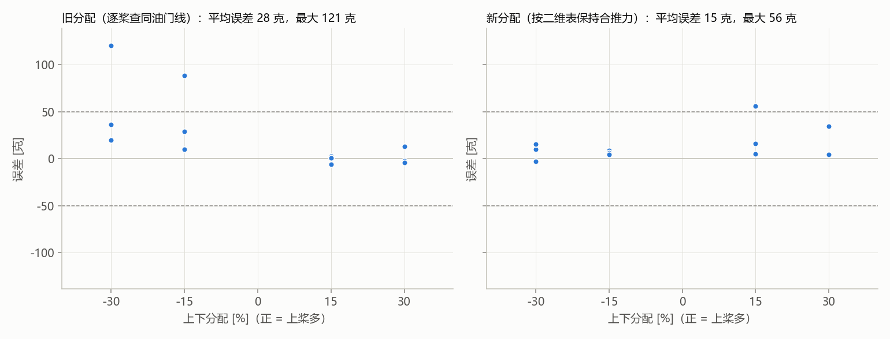

新分配 11 点：平均误差 15 克，最大 56 克，平均偏 +14 克；旧分配 12 点：平均误差 28 克，最大 121 克，平均偏 +26 克。误差 = 实测合推力 − 目标合推力。停止原因：completed。表：a5f0068bb431。

| 序号 | 分配 | 目标合推力 [克] | 上下分配 [%] | 上油门 [%] | 下油门 [%] | 电量 [V] | 实测 [克] | 误差 [克] | 二维表预测 [克] | 备注 |
|---|---|---|---|---|---|---|---|---|---|---|
| 1 | 新 | 889 | 30 | 74.9 | 48.6 | 12.31 | 924 | 35 | 910 | |
| 2 | 旧 | 889 | 30 | 73.0 | 47.1 | 12.48 | 886 | -3 | 868 | |
| 3 | 旧 | 499 | -30 | 32.7 | 48.3 | 12.45 | 519 | 20 | 510 | |
| 4 | 新 | 499 | -30 | 32.0 | 47.8 | 12.30 | 509 | 10 | 498 | |
| 5 | 新 | 1279 | 15 | 90.7 | 72.2 | 12.29 | 1335 | 56 | 1308 | |
| 6 | 旧 | 1279 | 15 | 87.6 | 69.6 | 12.55 | 1273 | -6 | 1246 | |
| 7 | 旧 | 889 | -15 | 53.8 | 67.3 | 12.44 | 918 | 29 | 910 | |
| 8 | 新 | 889 | -15 | 52.6 | 66.2 | 12.34 | 897 | 8 | 886 | |
| 9 | 新 | 499 | 15 | 45.9 | 37.6 | 12.32 | 504 | 5 | 492 | |
| 10 | 旧 | 499 | 15 | 45.7 | 37.4 | 12.27 | 502 | 3 | 489 | |
| 11 | 旧 | 1279 | -30 | 61.7 | 98.7 | 12.25 | 1400 | 121 | 1417 | |
| 12 | 新 | 1279 | -30 | 56.3 | 92.9 | 12.37 | 1276 | -3 | 1272 | |
| 13 | 新 | 889 | 15 | 69.1 | 55.4 | 12.28 | 905 | 16 | 888 | |
| 14 | 旧 | 889 | 15 | 68.2 | 54.5 | 12.27 | 889 | 0 | 875 | |
| 15 | 旧 | 499 | -15 | 37.2 | 45.5 | 12.33 | 509 | 10 | 505 | |
| 16 | 新 | 499 | -15 | 36.8 | 45.2 | 12.19 | 505 | 6 | 498 | |
| 17 | 新 | 1279 | 30 | — | — | 12.17 | — | — | — | 当前电量下查不到或已饱和 |
| 18 | 旧 | 1279 | 30 | 99.2 | 62.0 | 12.19 | 1292 | 13 | 1290 | |
| 19 | 旧 | 889 | -30 | 46.9 | 72.8 | 12.53 | 926 | 37 | 911 | |
| 20 | 新 | 889 | -30 | 45.5 | 72.0 | 12.22 | 905 | 16 | 892 | |
| 21 | 新 | 499 | 30 | 50.0 | 34.2 | 12.25 | 504 | 5 | 496 | |
| 22 | 旧 | 499 | 30 | 49.3 | 33.4 | 12.20 | 495 | -4 | 482 | |
| 23 | 旧 | 1279 | -15 | 71.9 | 90.5 | 12.15 | 1368 | 89 | 1359 | |
| 24 | 新 | 1279 | -15 | 68.4 | 86.6 | 12.38 | 1283 | 4 | 1271 |